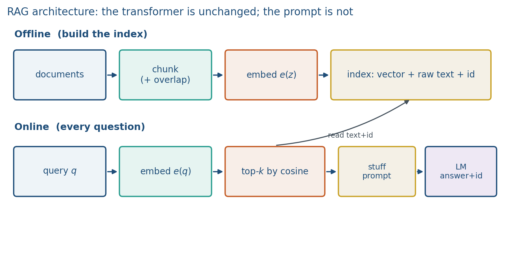
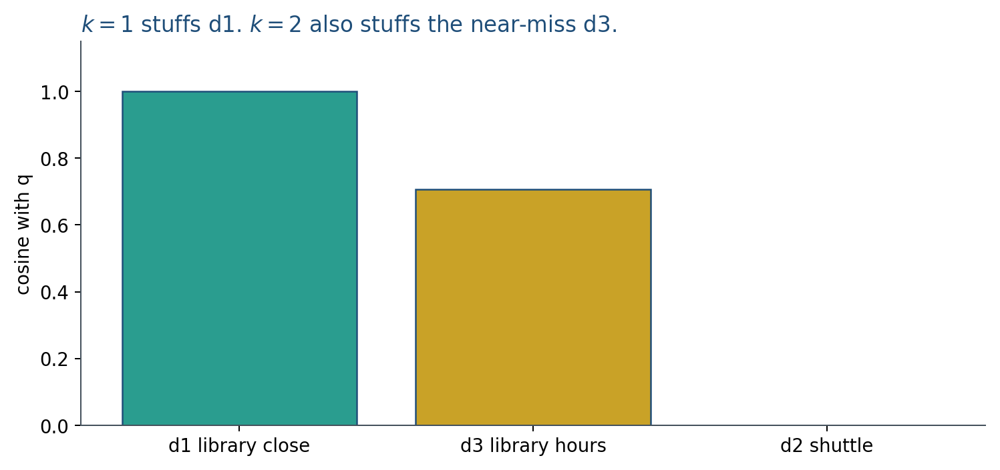

14.1 Retrieval-Augmented Generation
What RAG is, why it exists, the retrieve-then-generate stack, cosine and Lewis’s sum, then the three-doc ranking.
These notes match the lecture slides. Use (slides) on the course hub for the deck.
Week 10.3 named RAG so RAFT would make sense. This note is the method itself: look up passages from a collection you control, put them in the prompt, and generate from that context. By the end you should be able to draw the pipeline, write the cosine, and name a failure that retrieval cannot fix.
1. What RAG is
A frozen language model answers from weights. Those weights were trained on a snapshot of the web. They do not contain this semester's syllabus, a private PDF, or a fact that changed last week. When the model is unsure, it still produces fluent text. That fluent guess is a hallucination.
RAG means: look up relevant text first, then generate the answer from that text.
The name is literal.
- Retrieval: given a question, find a few passages from a collection you control.
- Augmented: put those passages into the prompt, next to the question.
- Generation: the same next-token model as always writes the answer, now conditioned on the passages.
You are not training a new network today. You are changing what the network is allowed to read at request time. The passages are non-parametric memory: the facts live in an index you can edit, not only inside .
A search engine returns links. RAG returns an answer, with the retrieved passages sitting in the context window. A fine-tune changes weights. RAG leaves the weights alone and changes the context.
2. Why we use it
Three jobs keep coming up in products and in this course.
- Fresh or private knowledge. Campus hours, a company policy PDF, a paper that appeared this month. Retraining a 7B model every time a PDF moves is the wrong tool.
- Citations. If the answer is supposed to come from chunk
[d1], a reader can open[d1]and check. Weights do not give you that handle. - A smaller generator plus a large library. You can keep a modest LLM and a large corpus, instead of stuffing the corpus into parameters.
Why not just fine-tune on the PDFs? Fine-tuning is slow to update, easy to overfit, and still does not cite a chunk id. Use it for style and format (Week 8 SFT / LoRA). Use RAG for facts that live in documents.
Why not dump the whole corpus into a long prompt? Context is expensive, and models often ignore the middle of a long list (lost in the middle). Retrieval is how you pick a handful of passages instead of all of them.
Karpathy’s browser demo is the same idea with the web as the index: emit a search, read the hits, then write. Custom GPTs that file your PDFs are the same loop with a private index.
3. Architecture
RAG is a pipeline, not a new layer inside the transformer.
Offline (once, then whenever the corpus changes):
- Collect documents (HTML, PDF, notes, a CSV of snippets).
- Chunk them into passages of a few hundred tokens, often with overlap so a sentence is not split from its date.
- Embed each chunk with the same embedder you will use for queries (Week 1 vectors; Week 5 CLIP is the multimodal cousin). Lab 14 uses bag-of-words counts so you can print the ranking without a GPU.
- Store, for each chunk: the vector, the raw text, and an id. That triple is the index. Vectors without text cannot be cited.
Online (every question):
- Embed the query with the same embedder.
- Score every chunk (or a fast approximate neighbor search). Keep the top-.
- Stuff the texts into a prompt: question, passages with ids, and instructions (answer from the passages; cite ids; say when the context is missing).
- The language model generates tokens. It is still . RAG changed the prompt, not the architecture.

Dense embeddings are one index. Keyword overlap / BM25 is another (Lab 10’s toy retriever). Hybrid systems use both. The generator does not care which ranker you used; it only sees the strings you stuffed.
4. How it works, step by step
Take a question students will actually type: “What time does Bender Library close on a weekday?”
- Index already exists. Suppose chunk
[d1]says the weekday close is 23:00,[d3]says something about hours but not 23:00,[d2]is about a shuttle. - Embed the question. In Lab 14 this is a count vector over the vocabulary. In a product this is a neural embedding.
- Rank. Cosine (below) puts
[d1]first,[d3]second,[d2]last. - Choose . stuffs only
[d1]. also stuffs[d3]. Recall can rise; a near-miss can now mislead the generator. - Prompt. Something like: Use only the passages. Cite ids like
[d1]. If the passages do not contain the answer, say you do not know. Then list the passages. - Generate. A good run answers 23:00 and cites
[d1]. A bad run cites[d2]while using the 23:00 fact, or ignores[d1]and invents 22:00 from pretraining.
The generator is still a next-token model. A wrong index cannot be saved by a prettier prompt.
5. Mathematical formulas
Let be the set of chunks. Let be the embedder (counts or a neural map). For a query and a chunk ,
Retrieve the chunks with largest cosine (ties: pick a rule and stick to it):
Generate one token at a time from the stuffed prompt :
That is what Lab 14 and most production “stuffing” RAG systems do: one generation given the concatenated top-.
Lewis et al. (2020) write a slightly richer model: retrieval is a distribution, and you marginalize over documents,
In practice the sum is restricted to the top-, and is often a softmax over retrieval scores. You do not need to train this week. You do need to know: the original paper treats which document you fetched as a latent variable; the lab treats it as a hard top- list.
Recall@ on a labeled item (question, gold chunk ids ):
If gold is [d1] and top-2 are [d3],[d2], recall@2 is . Retrieval failed before the generator ran.
6. Positive points and negative points
Positive.
- Update a fact by editing a document and re-indexing. No full retrain.
- You can ask for citations and check them.
- Works with a frozen generator (LoRA is optional; that is RAFT / Week 10.3).
- Domain corpora (this course, a hospital, a legal archive) stay outside the weights.
Negative.
- If the right chunk is not in the top-, generation cannot recover it. Garbage in, fluent garbage out.
- Extra latency: embed + search + generate.
- Chunking is a method. Too small: you lose the date. Too large: you retrieve noise. Overlap is a knob.
- Lost in the middle: gold sitting in a long stuffed list is often ignored. Raising is not free.
- Unfaithful citations: the model uses
[d1]and writes[d2]. Same bug class as unfaithful CoT (note 13.3). - The index can be stale, biased, or confidential. Retrieval copies whatever you stored.
- Dense retrievers fail on rare tokens (ids, course numbers) unless you add keywords.
When not to use RAG. A closed-book puzzle that is only in the weights (arithmetic without a calculator; ReAct’s tool is the better extra). A task that needs behavior change (stop being sycophantic): that is SFT / DPO, not an index.
7. What can fail
Four failure modes to name on the board.
- Miss. Gold never entered the top-. Measure recall@k. Fix chunking, the embedder, , or hybrid search.
- Near-miss. A related chunk ranks high (
[d3]“hours” for a closing-time question). The model over-trusts it. - Ignore. Gold is in the prompt; the model recites a pretrain snapshot anyway. That is a reader bug. Week 10.3 RAFT trains the reader. This week the reader is frozen.
- Unfaithful citation. The used sentence is in
[d1]; the model writes[d2].
ReAct (note 14.2) can treat retrieve as one tool among others, including a calculator.
A no-retrieval baseline is the parametric model on the same questions. If RAG does not beat it, the index or the prompt is the story, not “we added RAG.”
8. Measurement
Report retrieval recall@k on a labeled set of (question, gold chunk ids), then answer accuracy with an attribution check: does the cited id actually contain the claim? Always include a no-retrieval baseline. “We used RAG” is not a result.
9. Teaching this note
About 50 minutes at the board, then ~10 minutes of video. Do not start from cosine.
- 0–10 min. What / why: frozen weights vs an editable library; RAG vs fine-tune vs dumping the corpus.
- 10–22 min. Architecture: offline index (vector + text + id) and the online path. Write the cosine and top- formulas.
- 22–34 min. Worked three-doc cosine. vs . Lost in the middle.
- 34–48 min. Pros / cons. Four failures. Recall@k and attribution. RAFT is training; this is inference.
- Then play Karpathy intro 27:43–33:32 (tool use: browser as retrieve-then-read) and mention 40:45–42:15 (custom GPTs / files as a private index). Pause when the model emits a search and reads the hits.
10. Worked example
Three chunks, vocab , bag-of-words counts:
| id | text (toy) | vector |
|---|---|---|
| d1 | library close | |
| d2 | shuttle loop | |
| d3 | library hours |
Query , vector . Cosine .
Rank: d1, d3, d2. For you stuff only d1 (right chunk for a closing-time question). For you also stuff d3: recall can rise, but the generator now sees a near-miss about “hours” that may not include 23:00.

Lost in the middle: if the gold chunk sits in the middle of a long stuffed list, models often ignore it. That is a retrieval-plus-position bug, not “the model cannot read.” Keep small in Lab 14.
If the model then cites [d2] while using the 23:00 fact from d1, that is unfaithful attribution.
11. Where students get stuck
- Treating RAG as a new neural net. It is a conditioning stack.
- Measuring only answer accuracy. You need recall@k and a citation check.
- Stuffing and wondering why the model ignores the gold chunk.
- Putting only vectors in the index and dropping the raw text / id, so you cannot cite.
- Calling Week 10.3 RAFT “RAG.” RAFT trains the reader on retrieved bundles. This week the reader is frozen.
12. Video
Watch Andrej Karpathy, Intro to Large Language Models, second half: 27:43–33:32 (browser / retrieval) and 40:45–42:15 (customization with files).
Pause on emit-search → read hits → write with sources. Same URL as notes 13.1, 14.2, and 15.1. This note is the retrieve-then-generate picture; 14.2 is the tool loop. For the original paper’s sum-over-documents picture, skim Lewis et al., arXiv:2005.11401, the RAG-sequence setup.
13. Practice
-
In one sentence each: what RAG is, and why a frozen LLM by itself is not enough for this semester’s late-policy PDF.
-
What belongs in the index besides the embedding vector? Why?
-
Write the cosine formula, then compute exactly as a fraction from the three vectors above. Write the id list.
-
Why can raising hurt the answer even if it raises recall@k?
-
You retrieve the right chunk and the answer is still wrong. Name two different bugs.
-
Gold chunk is d1. Retrieved top-2 are d3, d2. Recall@2 for this item? Answer cites
[d1]. Attribution pass or fail? -
Write Lewis’s sum in words. What does Lab 14 do instead of the sum?